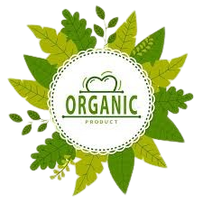
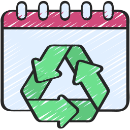

EcoProdutos
Lançamento da loja de ecoprodutos!
Bem-vindo à EcoProdutos, sua parceira na construção de um futuro mais sustentável! Fundada com o propósito de promover a consciência ambiental, nossa empresa oferece uma ampla gama de produtos e serviços que respeitam e protegem o meio ambiente.
Na EcoProdutos, acreditamos que pequenas ações podem fazer uma grande diferença. Por isso, trabalhamos incansavelmente para fornecer soluções ecológicas que atendam às suas necessidades, desde produtos de limpeza feitos com ingredientes naturais até consultorias especializadas em sustentabilidade.
Nosso compromisso vai além da simples venda de produtos; queremos inspirar uma mudança de comportamento em nossa comunidade. Com uma equipe dedicada e apaixonada, estamos prontos para guiá-lo em sua jornada rumo a um estilo de vida mais consciente e responsável.
Junte-se a nós na missão de cuidar do nosso planeta e descubra como a EcoProdutos pode transformar sua rotina em um exemplo de sustentabilidade!
Nossos Serviços
- Consultoria em Sustentabilidade

- Workshops de DIY Sustentável

- Serviço de Entrega Sustentável

- Programa de Reciclagem 
- Assinatura de Ecoprodutos

Nossos produtos
Canudos de Inox
Ecobags
Talheres de Bambu
Escovas de Dente de Bambu
Panos de Cera

Uma alternativa reutilizável e durável aos canudos de plástico, ajudando a reduzir o desperdício
Sacolas reutilizáveis que substituem as sacolas plásticas, promovendo um consumo mais sustentável.
Opção biodegradável e vegana que substitui talheres descartáveis, contribuindo para a redução do plástico.

Sustentáveis e compostáveis, essas escovas são uma alternativa ecológica às escovas de plástico.

Embalagens naturais e biodegradáveis que substituem o plástico filme, ideais para conservar alimentos de forma sustentável.
O que dizem nossos clientes
João Lilou da Silva Alves
⭐⭐⭐⭐⭐
"Comprei canudos de inox na Ecoprodutos e estou muito satisfeito! A qualidade é excelente, eles são duráveis e fáceis de limpar. O atendimento foi rápido e atencioso, e a entrega chegou antes do prazo. Adoro saber que estou contribuindo para a redução do uso de plástico. Recomendo a todos que buscam uma opção sustentável!"
Reginaldo Pereira Boulos
⭐⭐⭐⭐⭐
Recentemente comprei ecobags na Ecoprodutos e estou extremamente satisfeito! A qualidade das bolsas é excelente, feitas de material resistente e durável. Elas são perfeitas para as compras do dia a dia e ajudam a reduzir o uso de plástico, o que é um grande diferencial. Além disso, a variedade de estampas e cores é um bônus, tornando-as estilosas. O atendimento foi ótimo e a entrega rápida. Recomendo a todos que buscam uma alternativa sustentável!
Bora Bill lá ELE da Silva Fonseca
⭐⭐⭐⭐⭐
Os panos de cera que comprei são simplesmente incríveis! Eles têm um design bonito e funcional, e o melhor de tudo é que são feitos com materiais naturais. Usei para cobrir frutas, pães e até mesmo tigelas, e funcionaram perfeitamente. A durabilidade é impressionante; já lavei várias vezes e continuam como novos. Além disso, é ótimo saber que estou fazendo minha parte para ajudar o meio ambiente. O processo de compra foi fácil e a entrega foi rápida. Super recomendo!
Amostradinho 28
⭐⭐⭐⭐⭐
Comprei a escova de dente de bambu da Ecoprodutos e estou muito satisfeita! O cabo é super confortável de segurar e as cerdas são macias, proporcionando uma limpeza eficaz sem agredir as gengivas. Adoro que é um produto biodegradável, ajudando a reduzir o uso de plásticos. Além disso, a escova não retém odores ou sabores, o que é um grande diferencial. O envio foi rápido e a embalagem era reciclável. Recomendo a todos que querem fazer uma escolha mais sustentável para a higiene bucal!